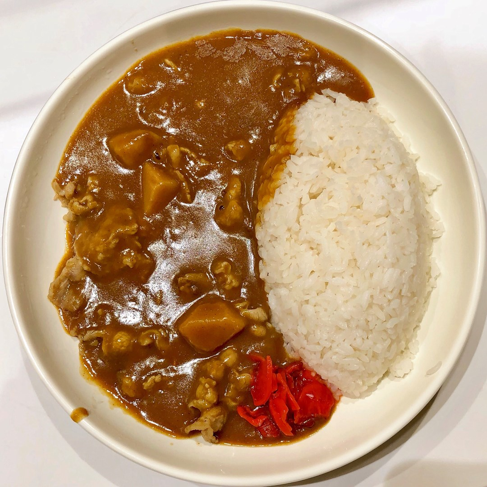

Recipe Detail
Recipe Detail
Curry[カレーライス]

Required ingredients
List of ingredients
- Rice: 2 cups
- Japanese curry roux: 1 block
- Water: 4 cups
- Chicken thighs or beef: 300 grams, cut into bite-sized pieces
- Onion: 1, finely chopped
- Carrots: 2, diced
- Potatoes: 2, diced
- Oil: 2 tablespoons
- Salt and pepper, to taste
Other
-
- Difficulty level: Easy
- Required time: 15min
Steps
- Wash the rice thoroughly and cook it according to package instructions.
- In a large pot, heat oil over medium heat. Add onions and sauté until translucent.
- Add the chicken thighs or beef and cook until lightly browned.
- Add carrots and potatoes to the pot. Sauté for a few minutes.
- Pour in the water and bring to a boil. Reduce heat to low and let it simmer until the vegetables are tender.
- Break the curry roux block into pieces and add it to the pot. Stir well until the roux is completely dissolved.
- Season with salt and pepper as needed. Simmer for an additional 10 minutes, stirring occasionally.
- Once the curry has thickened to your liking, remove from heat.
- Serve the curry over cooked rice and enjoy!